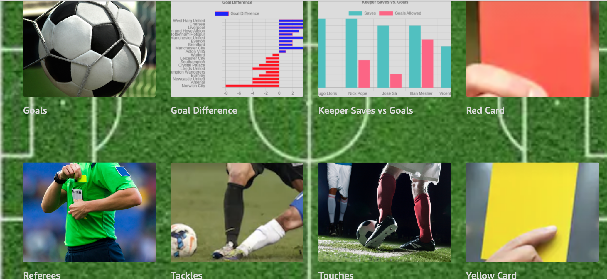

Try Premier League
We've recently added background crowd sounds and emotionality based on various teams performance, hope you enjoy!
If you have a comment, question or suggestion please email us at BrianTarbox@gmail.com
If you enjoy Premier League please consider giving us a review. If you did not like the skill please email and we will try to fix it. It's all about the beautiful game.
If you are using an Alexa without a screen you can ask about the following things:
table, results, fixtures, touches, tackles, fouls, clean sheets, goals, yellow cards, red cards, referees
If you are using an Alexa with a screen you can press any of these buttons

If you select teams you can get the form, fixtures or results for that team